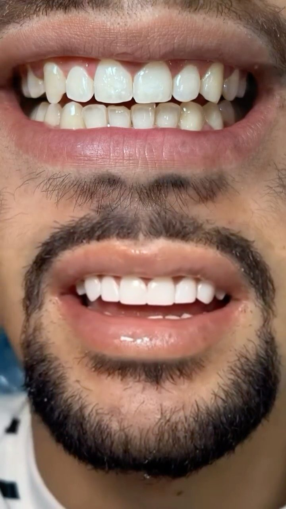
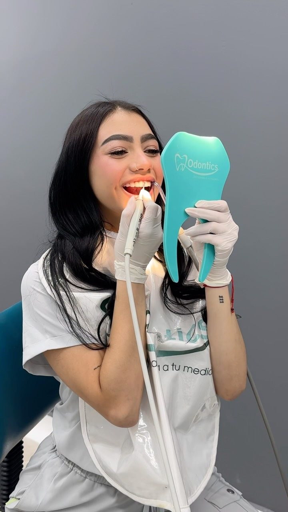
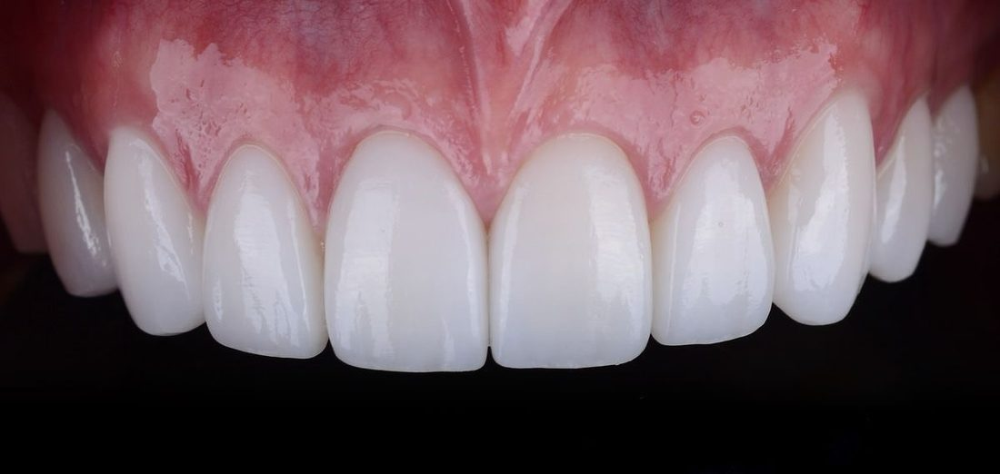
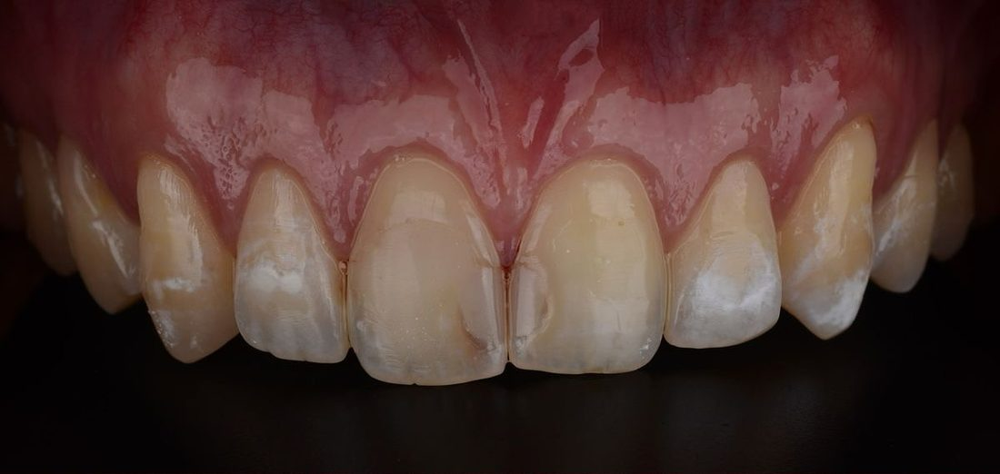
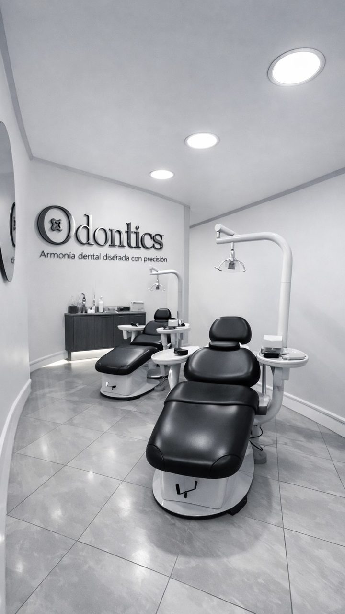
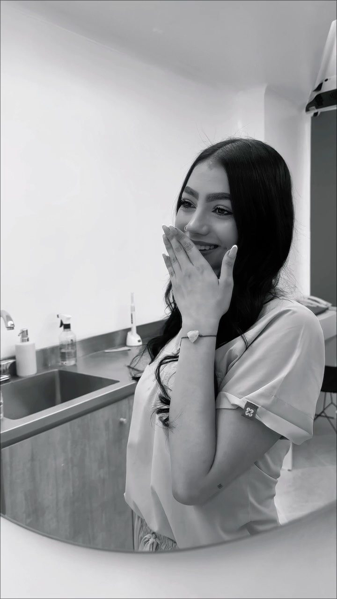

Carillas cerámicas hechas a mano, a tu medida.Ceramic veneers hand-made, made for you.
Láminas de porcelana que corrigen color, forma y proporción con un desgaste mínimo del diente. Las diseñamos en digital, las pruebas antes de cementarlas y el resultado se ve tuyo, no de catálogo.Porcelain veneers that correct colour, shape and proportion with minimal tooth reduction. We design them digitally, you try them before bonding, and the result looks like you — not a catalogue.
- 0,3–0,7mmde espesorthin
- 5–7días hábilesbusiness days
- 10+años de vida útilyears lifespan


Una carilla es una lámina de porcelana tan delgada como un lente de contacto, que se adhiere a la cara visible del diente. Cambia lo que se ve, conserva lo que eres.A veneer is a porcelain shell as thin as a contact lens, bonded to the visible side of the tooth. It changes what shows, and keeps what is yours.
Es la opción indicada cuando la limpieza o el blanqueamiento no son suficientes, pero no hace falta una corona completa.It is the right choice when cleaning or whitening is not enough, but a full crown is not needed.
- Manchas resistentesStubborn stainsQue no ceden con blanqueamiento.That whitening cannot lift.
- Forma o tamañoShape or sizeDientes cortos, gastados o irregulares.Short, worn or uneven teeth.
- Espacios pequeñosSmall gapsDiastemas que no requieren ortodoncia.Gaps that do not need braces.
- Fracturas levesMinor chipsBordes astillados o desgastados.Chipped or worn edges.
Desliza. Mismo paciente, otra sonrisa.Slide. Same patient, a new smile.


Cuatro citas, cero sorpresas.Four visits, no surprises.
Antes de tocar un diente ya habrás visto y probado tu nueva sonrisa. Así decides con calma y sobre algo real.Before a single tooth is touched, you will have seen and tried your new smile. You decide calmly, on something real.
- 01
Valoración y diseño digitalAssessment & digital design
Fotos, escaneo y análisis de tu sonrisa. Diseñamos proporciones y color contigo.Photos, scan and smile analysis. We design proportions and shade with you.
Día 1Day 1 - 02
Mock-up en bocaIn-mouth mock-up
Te probamos el diseño en resina temporal para que lo veas en tu cara antes de decidir.You try the design in temporary resin and see it on your face before deciding.
Día 2Day 2 - 03
Preparación mínimaMinimal preparation
Pulimos entre 0,3 y 0,7 mm del esmalte y tomamos la impresión para el laboratorio.We polish 0.3 – 0.7 mm of enamel and take the impression for the lab.
Día 3Day 3 - 04
Cementado y entregaBonding & reveal
Ajustamos cada carilla, la cementamos y revisamos tu mordida. Sales con tu nueva sonrisa.We fit and bond each veneer and check your bite. You leave with your new smile.
Día 5–7Day 5–7
Cerámica o resina: la diferencia está en los años.Ceramic or resin: the difference shows over the years.
Las dos son buenas opciones. Te recomendamos la que tenga sentido para tu caso y tu presupuesto.Both are good options. We recommend the one that makes sense for your case and budget.
Lo que más nos preguntan.What people ask us most.
¿Tienes otra duda? Escríbenos y te responde directamente el equipo clínico.Another question? Message us and the clinical team replies directly.
Preguntar por WhatsAppAsk on WhatsApp
¿Duele el procedimiento?Does it hurt?
No. La preparación es mínima y se hace con anestesia local. Después puedes sentir algo de sensibilidad uno o dos días.No. Preparation is minimal and done under local anaesthesia. You may feel some sensitivity for a day or two afterwards.
¿Tienen que desgastarme mucho los dientes?Will my teeth be filed down a lot?
Entre 0,3 y 0,7 mm de esmalte, según el caso. En algunos casos no hace falta preparar el diente.Between 0.3 and 0.7 mm of enamel, depending on the case. Some cases need no preparation at all.
¿Se van a ver artificiales?Will they look fake?
No buscamos el blanco “de comercial”. Elegimos color, forma y translucidez según tu rostro, y lo pruebas antes con el mock-up.We avoid the “TV-ad white”. Shade, shape and translucency are chosen for your face, and you try them first with the mock-up.
¿Cuánto duran y cómo se cuidan?How long do they last and how do I care for them?
Con buena higiene y controles, más de 10 años. Se cuidan como tus dientes: cepillado, seda dental y evitar morder objetos duros.With good hygiene and check-ups, over 10 years. Care for them like your teeth: brushing, flossing and not biting hard objects.
Vengo del exterior, ¿cuántos días necesito?I am travelling from abroad — how many days do I need?
Entre 5 y 7 días hábiles en Medellín. Hacemos la valoración virtual antes del viaje para tener todo planeado.5 to 7 business days in Medellín. We do a virtual assessment before you travel so everything is planned. Turismo dentalDental tourism →

Tu nueva sonrisa empieza con una valoración.Your new smile starts with an assessment.
Revisamos tu caso, te mostramos el diseño y te damos un plan con tiempos y costos cerrados. Sin compromiso.We review your case, show you the design and give you a plan with fixed timing and cost. No commitment.